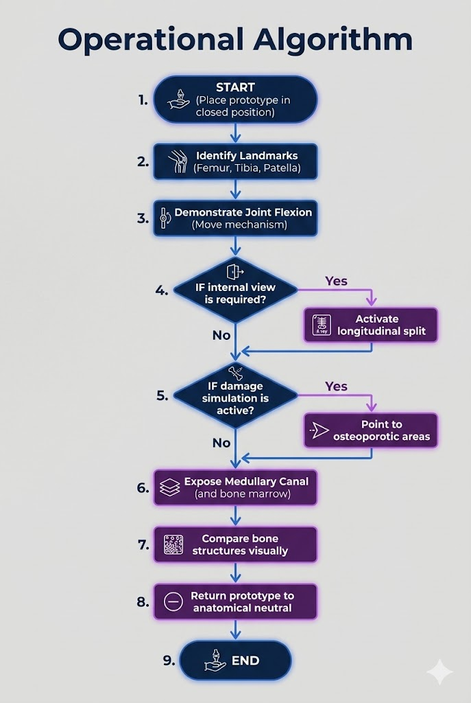
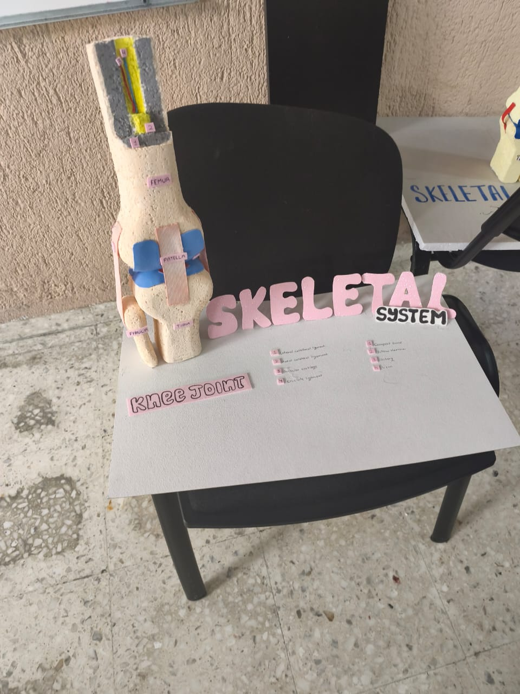

Prototype Operational Overview
This section documents the logic and sequence used to demonstrate the functionality of our mechanical knee joint.
The algorithm defines how the prototype transitions from a resting state to a full anatomical demonstration,
explaining the internal and external skeletal structures.
Operational Algorithm
- START — Place the prototype in the initial closed position.
- Identify external landmarks: Femur, Tibia, and Patella.
- Demonstrate Joint Flexion by moving the hinge mechanism.
- IF internal view is required → Activate the longitudinal split mechanism.
- IF damage simulation is active → Point to specific osteoporotic areas.
- Expose the medullary canal and bone marrow layers.
- Compare healthy vs. weakened bone density structures visually.
- Return prototype to the anatomical neutral position.
- END
Flowchart

Operational flowchart for the mechanical demonstration.
The visual reference was created with Artificial Intelligence (Gemini).
Demonstration Logic (Pseudocode)
PROCEDURE Demonstrate_Knee_Joint
INITIALIZE model_closed
WHILE demonstration_active:
MOVE joint.flexion (angle_0_to_90)
IF user_requests_internal_view THEN
OPEN bone_section.longitudinal
HIGHLIGHT medullary_cavity
DISPLAY spongy_bone_texture
ELSE
MAINTAIN external_structural_view
END IF
IF showing_osteoporosis_effect THEN
POINT_TO density_loss_zones
END IF
RESET model_to_neutral
END WHILE
END PROCEDURE
Model Reference

Mechanical setup of the hinge and sectional opening.
AI Prompts Used to Create This Website
The following AI tools and prompts were used in the development of this website:
- Tool used: Claude (Anthropic) — claude.ai and Gemini (Google) — gemini.google.com
- Prompt : "Hola Claude. Voy a realizar mi Producto Integrador de Aprendizaje (PIA)
de la materia IAR...
Etiquetas Obligatorias: En el código debes utilizar frecuentemente las etiquetas
" <p> </p> ",
" <br> </br> ",
" <b> </b> ",
" <em> </em> ",
" <ul> </ul> ",
" <ol> </ol> " y
" <li> </li> ".
Estética: Usa la etiqueta <font> para definir colores...
la etiqueta <body> con el atributo bgcolor...
Multimedia: Deja el espacio (tags <img>) para insertar al menos 2 imágenes centradas...
Cualquier tipo de texto debe ser en ingles..."